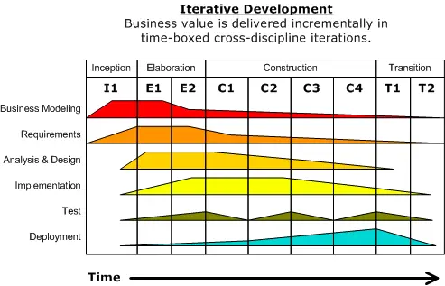
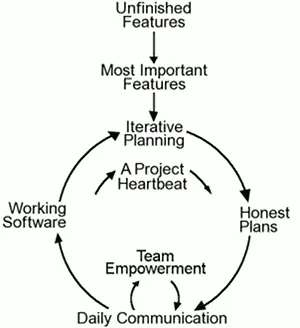
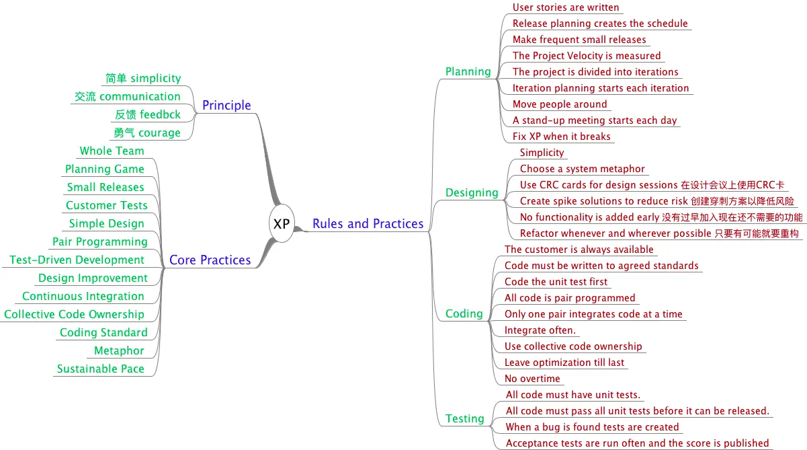
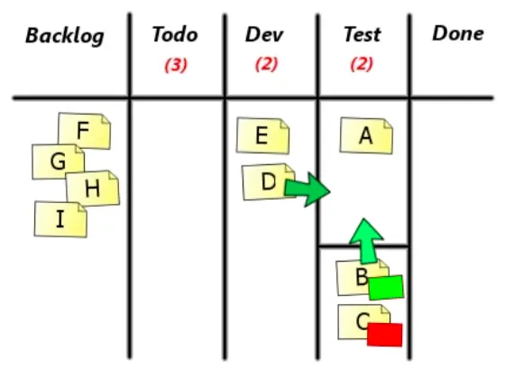
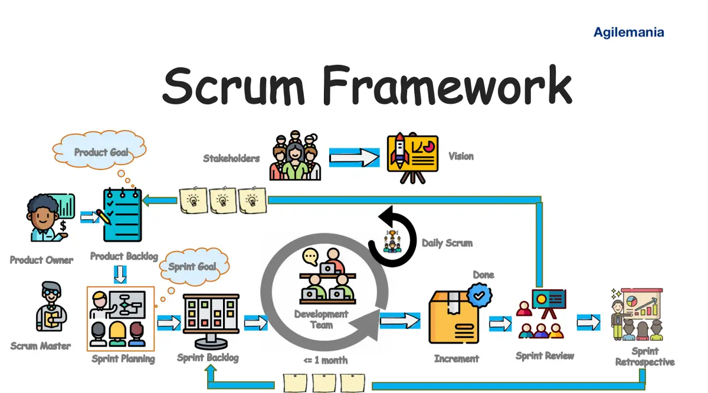

敏捷开发方法回顾
Posted on Sun 10 September 2023 in Journal
| Abstract | Journal on 2023-09-10 |
|---|---|
| Authors | Walter Fan |
| Category | learning note |
| Status | v1.0 |
| Updated | 2023-09-10 |
| License | CC-BY-NC-ND 4.0 |
有些真理不言自明
图难于其易，为大于其细；
天下难事，必作于易； 天下大事，必作于细。
是以圣人终不为大，故能成其大
-- 老子
- “凡事预则立，不预则废"，没有事先的计划和准备，就不能获得战争的胜利
- 理解，尊重和顺应人性，而不是反人性
- 好记性不如烂笔头 -- 有章可循，有案可查
- 降低沟通的成本，而不是增加，
- 提高工作的效率，而不是降低
- 分而治之，小步快跑，快速迭代
客户想要一个智能报告助手，替代现在的人工报告员，
1) 我们加班加点闷头干一年，交付一个我们以为完美满足用户需求的产品，实际上用户可能并不满意
2) 我们每两周交给用户一个功能有限但能够工作的软件产品，用户可以不断给出反馈，团队不断做出改进，一年后交付给用户一个符合其预期的产品。
天下武功，唯快不破，而这个快不是百米冲刺，而是要象汽车拉力赛那样，定好目标，规划好路线和行程，保持好节奏，及时调整方向，少浪费，少走回头路。
敏捷方法主要有四大价值观，十二大原则，最终目的是向用户持续交付价值，实现企业持续增长的商业目标
在改变和裁剪之后，先花时间学习和理解敏捷方法，两周一个迭代，每个迭代都有东西交付，包括业务故事或者技术故事，把故事讲好做成，让团队自豪，让"用户"满意。
Scrum 是最常用的敏捷方法，它的 3-5-3 要素简单易行，应用极广。
敏捷方法回顾
软件工程发展历史上, 当软件变得越来越复杂时, 规模变得越来越大时, 失败的机率由此递增, 许多项目一再延期, 软件工程应运而生, 人们希望向建筑工程, 机械工程那样来定义和规范软件工程.
很难说在软件行业的过去流行一些做法不好, 软件工程中大部分理论都是对的, 但是由于软件本身所具有的复杂性和多变性, 僵化的流程, 硬性的规定难以适用所有的场景.
所以既然唯一不变的是变化本身. 我们的流程和方法也应该是着重于应对变化.
这里简单回顾一下我所经历的软件工程向敏捷过渡的过程.
软件开发一般有如下方法
- 1.编码修复方法Code-fix: 边写边改
- 2.瀑布式方法Waterfall: 概念-需求-设计-编码-测试
- 3.进化式原型化方法Evolutionary Prototypeing:迭代开发
- 4.分布交付方法Staged Delivery:
- 5.RUP方法: www.rational.com
- 6.MSF方法(Microsoft Solutions Framework): www.microsoft.com/business/services/mcsmsf.asp
- 7.敏捷方法: XP, FD, Scrum, ASD,DSDM,etc. 里程碑: FC,CC,CF,ER XP:http://www.extremeprogramming.org/
瀑布方法
我所在的公司中曾经长期施行一套软件工程周期方法 ERCM - Engineering Release Cycle Methodology
将软件开发过程分为需求分析, 设计,编码,测试等过程, 并以里程碑 milestone 来管理 共用如下里程碑
- RC - Requirements Complete: 需求完成, 各方签署同意需求文档 (PRD/UI sign-off)
- DC - Design Complete: 设计完成, 各方签署同意设计文档 (Design Spec sign-off)
- FC - Feature Complete: 功能完成, 单元测试完成
- CC - Code Complete: 代码完成, 集成测试完成
- CF - Code Freeze: 代码冻结, 没有遗留严重的 bug
- ER - Engineering Release: 工程项目正式发布
这套方法执行了若干年, 行之有效, 但是随着市场的变化, 竞争的激烈, 需求变化变更频繁, 它的问题暴露得愈加明显, 往往前松后紧, 不能及时的应对变化, 一旦在设计完成之后发生变化, 就会打乱原来井井有条的流程. 更要命的是, 在项目后期发现设计有重大缺陷, 或者与需求大相径庭, 需要推倒重来, 却发现时间已经远远不够了, 只能加班.
所以, 软件从业者逐渐认识到, 一次就全部想好,想周全, 并在项目开发过程中不再修改需求和设计, 几乎是一个不可能完成的美好梦想, 迭代式开发, 逐渐更新完善软件才是正道
IBM 公司为此提出了一套堪为完整的开发流程 RUP - Rational Unify Process 在

简单来说, 有四个阶段:
- 初始阶段 Inception
- 细化阶段 Elaboration
- 构建阶段 Construction
- 发布阶段 Transition
六个最佳实践:
- 1 迭代式开发
事先了解所有需求当然最好, 但是通常办不到, 分阶段增量式迭代开发的方案可降低返工成本
- 2 管理需求
永远铭记是用户设定需求, 可以引领和分析, 不可臆测, 需求应该有优先级, 有清晰的验收标准
- 3 使用组件
将整个系统拆分成组件, 在集成之前进行组件测试, 模块化的面向对象编程也有利于代码重用
- 4 可视化建模
用图表来表示所有主要的组件,用户, 和它们之间的交互, 比如UML 和简单的框图
- 5 验证质量
用单元测试, 集成测试, 端到端的测试, 以及度量分析来充分验证质量
- 6 控制变化
唯一不变的是变化, 变化对于项目应该是渐进的,可控的
敏捷方法
敏捷是一种方法, 代表一种精神, 让事情变得简单高效, 就象 XP 创始人 Kent Back 所说的快速地拥抱变化
所以敏捷的精神在于快速的应对变化, 告别冗长的流程, 专注于提供对于用户有价值的软件.
先回顾一下敏捷宣言及其提倡的原则
Agile Manifesto 敏捷开发宣言
We are uncovering better ways of developing software by doing it and helping others do it. Through this work we have come to value:
- Individuals and interactions over Processes and tools
- Working software over Comprehensive documentation
- Customer collaboration over Contract negotiation
- Responding to change over Following a plan
That is, while there is value in the items on the right, we value the items on the left more.
我们一直在实践中探寻更好的软件开发方法， 身体力行的同时也帮助他人。由此我们建立了如下价值观：
个体和互动 高于 流程和工具 工作的软件 高于 详尽的文档 客户合作 高于 合同谈判 响应变化 高于 遵循计划
也就是说，尽管右项有其价值， 我们更重视左项的价值。
Agile principles 敏捷开发原则
The Agile Manifesto is based on twelve principles * Customer satisfaction by rapid delivery of useful software * Welcome changing requirements, even late in development * Working software is delivered frequently (weeks rather than months) * Close, daily cooperation between business people and developers Projects are built around motivated individuals, who should be trusted * Face-to-face conversation is the best form of communication (co-location) * Working software is the principal measure of progress * Sustainable development, able to maintain a constant pace * Continuous attention to technical excellence and good design * Simplicity—the art of maximizing the amount of work not done—is essential * Self-organizing teams * Regular adaptation to changing circumstances
- 通过快速交付有用的软件来满足客户需求
- 欢迎不断变化的需求，即使是在开发后期
- 工作软件频繁交付（几周而不是几个月）
- 业务人员和开发人员之间密切的日常合作
- 项目是围绕有积极性的个人建立的，这些人应该值得信任
- 面对面交谈是最好的沟通方式（同地办公）
- 可以工作的软件是衡量进度的主要标准
- 可持续发展，能够保持恒定的步伐
- 持续关注卓越技术和良好设计
- 简单性 — 最大化未完成工作量的艺术—至关重要
- 自组织团队
- 定期适应不断变化的情况
- 工具和流程很重要，但更重要的是让有能力的人有效地合作。
- 好的文档有助于帮助人们理解软件是如何构建以及如何使用它，但开发的重点是创建软件，而不是文档。
- 合同很重要，但不能替代与客户密切合作以发现他们的需求。
- 项目计划很重要，但不能太死板，无法适应技术或环境、利益相关者的优先事项以及人们对问题及其解决方案的理解的变化。
-- Scott Ambler
- 敏捷运动并不是反方法论，事实上我们许多人都希望恢复方法论这个词的可信度。
- 我们想要恢复平衡。 我们拥抱建模，但并不是为了在尘土飞扬的公司存储库中归档一些图表。
- 我们欢迎文档，但不喜欢数百页从未维护和很少使用的大部头。
- 我们计划，但认识到在动荡的环境中计划的局限性。
— Jim Highsmith
XP
在众多敏捷方法中, 最负盛名的当数极限编程 eXtreme Programming, 它所倡导的用户反馈, 持续集成, 测试驱动, 结对编程等最佳实践影响深远

这是我当年作笔记时画的一张脑图

Kanban
看板据说最早来自丰田工作法, 有一个产品需求任务的优先级队列, PO(Product Owner 产品负责人) 负责需求分析并制定任务的优先级, 团队成员从中按优先级从高到低选取任务进行开发, 所有的任务都放在一个大的看板上

Scrum
现在众多软件及互联网公司应用较多就是 Scrum 敏捷开发流程, 强调以相对固定的几周一个迭代周期(Sprint), 以跨职能,自组织的 Scrum team 持续交付对用户有价值的软件. 它比较强调节奏感, 仪式感, 可操作性强, 在多数互联网公司中广泛应用
Scrum 是一个轻量的框架，它通过提供针对复杂问题的自适应解决方案来帮助人们、团队和组织 创造价值。
简而言之，Scrum 需要 Scrum Master 营造一个环境，从而：
- 一名 Product Owner 将解决复杂问题所需的工作整理成一份 Product Backlog。
- Scrum Team 在 一个 Sprint 期间将选择的工作 Sprint Backlog 转化为有价值的 Increment。
- Scrum Team 和利益攸关者检查结果并为下一个 Sprint 进行调整。
- 重复以上步骤
详细说明参见 https://scrumguides.org/scrum-guide.html

Scrum 的三大支柱
-
透明 涌现的过程和工作必须对执行工作的人员和接受工作的人员都是可见的。在 Scrum 中，重要的决 策是基于其 3 个正式工件的感知状态。透明度较低的工件可能导致做出降低价值并增加风险的决 策。透明使检查成为可能。没有透明的检查会产生误导和浪费。
-
检查
Scrum 工件和实现商定目标的进展必须经常地和勤勉地进行检查，以便发现潜在的不良的差异或问 题。为了帮助检查，Scrum 以 5 个事件的形式提供了稳定的节奏。 检查使适应成为可能。没有适应的检查是毫无意义的。Scrum 事件旨在激发改变。
- 适应 如果过程的任何方面超出可接受的范围或所得的产品不可接受，就必须对当下的过程或过程处理 的内容加以调整。 调整工作必须尽快执行以最小化进一步的偏差。
当所涉人员没有得到授权或不能自管理（self-managing）时，则适应将变得更加困难。 在通过检 查学到任何新东西时，Scrum Team 会做出相应调整
Scrum 价值观
Scrum 的成功应用取决于人们变得更加精通践行并内化 5 项价值观：
- 承诺：Scrum Team 致力于达成其目标并且相互支持。
- 专注：Scrum Team 的主要关注点是 Sprint 的工作，以便尽可能地向着这些目标获取最好的进展。
- 开放：Scrum Team 及其利益攸关者对工作和挑战持开放态度。
- 尊重：Scrum Team 成员相互尊重，彼此是有能力和独立的人，并因此受到与他们一起工作的人的尊重。
- 勇气：Scrum Team 成员有勇气做正确的事并处理那些棘手的问题
Scrum的过程
- 将整个产品的 Product Backlog 分解成 Sprint Backlog, 这个Sprint Backlog是按照目前的人力物力条件可以完成的。
- 召开 Sprint Planning Meeting，安排选定这个Sprint内需要完成的 User Story，标注 User Story 的优先级并由团队成员认领。
- 进入sprint开发周期，在这个周期内，每天需要召开 Daily Scrum meeting。
- 整个sprint周期结束，召开Sprint review meeting，将成果演示给Product Owner.
- 团队成员最后召开 Sprint retrospective meeting，总结问题和经验。
- 这样周而复始，按照同样的步骤进行下一次Sprint.
3 种角色：
- 产品负责人（Product Owner）
- Scrum Master
- Scrum团队
5 种事件:
- Sprint 冲刺过程
- Sprint计划会议（Sprint Planning Meeting）
- 每日站会（Daily Scrum Meeting）
- Sprint评审会议（Sprint Review Meeting）
- Sprint回顾会议（Sprint Retrospective Meeting）
3 种工件:
- 产品Backlog（Product Backlog）
- SprintBacklog（Sprint backlog）
- Increment（产品增量）
Scrum 的工件代表工作或价值。 它们旨在最大限度地提高关键信息的透明度。 因此，为适应而检 视它们的每个人对工件都有相同的基础。每个工件都包含一个承诺，以确保它提供可增强透明度并聚焦于可度量进展的信息：
- 对于 Product Backlog 而言，它是 Product Goal。
- 对于 Sprint Backlog 而言，它是 Sprint Goal 。
- 对于 Increment 而言，它是 Definition of Done
中文版的 scrum guide 参见 https://scrumguides.org/docs/scrumguide/v2020/2020-Scrum-Guide-Chinese-Simplified.pdf
GASP
Scrum 有一些被广泛接受的实践 Generally Accepted Scrum Practice (GASP)， 比如 User story 的制订的Role-Action-Benefit 格式, 例如:
- "As a Role, I want to Action, so that benefit"
- 作为一个招聘者，我想在各大招聘平台发布新的职位信息，从而让应聘者方便快捷地发现我们的职位并来求职
以及 User Story 的 INVEST 原则
- "I" ndependent (of all others) 独立的: 每个用户故事应该代表一组独特且独立的业务价值，这样，如果它单独发布，它将比之前的状态提供增量价值。
- "N" egotiable (not a specific contract for features) 可协商的: 虽然最终目标可能被清楚地描述，但实现该目标的方法应该是可协商的——在产品负责人和开发团队、产品负责人和客户或任何其他相关利益相关者之间—以防止对特性或功能的不切实际的要求
- "V" aluable (or vertical) 有价值的： 任何用户故事的商业价值都应该通过阅读故事而容易被识别，并且每个故事都应该代表特定用户类型的某种价值
- "E" stimable (to a good approximation) 可估量的： 我们必须有足够的信息来正确确定故事的大小，以便我们可以正确地计划和致力于我们的工作
- "S" mall (so as to fit within an iteration) 足够小的， 用户故事应该足够小，以便能够在一个 sprint 冲刺内完成
- "T" estable (in principle, even if there isn't a test for it yet) 可测试的: 团队的所有成员都需要一种清晰、准确的方法来验证用户故事是否已完成
以及常用的 Burndown Chart 燃尽图， Burnup Chart 燃起图等等，不再一一赘述
Reference
- http://www.extremeprogramming.org/
- https://smartbear.com/learn/code-review/best-practices-for-peer-code-review/
本作品采用知识共享署名-非商业性使用-禁止演绎 4.0 国际许可协议进行许可。